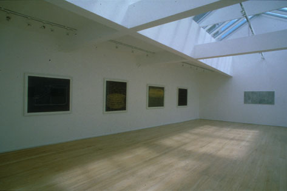

home
Re-Natured 2019 -2020
Model Series 2011 - 2014
Evidence of Doubt 2011 - 2013
Regeneration 2006 - 2010
Under False Colours 2004
Works 1996 - 2000
contact
biography
Works 1996-2000
 Beneath the Surface 1998, Anne Faggionato and Francis Graham-Dixon Gallery, London. "The final paradox remains of course, that despite the length of time the artist has spent on each work, and that almost every millimetre of many of the works has been meticulously covered by the artist's hand, the artist herself is completely absent. Either screened from view by one of the layers of paper, or buried beneath the surfaces of the skin canvases, no expressive marks are visible. The erasure of the artist contributes to the greater sense of the image's own reality, as though the object is beginning to appear by itself, an imprint of its own existence rather than something constructed. Bearing traces of its former self, the object emerges like a stain, neither wholly present nor fully absent, marks not just of what has been but also, perhaps, of what is to come." Simon Groom (taken from Parallel Objects, 2000)
|